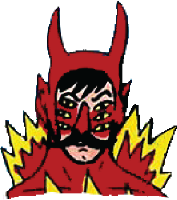

The walls are caving in again
Happens every now and then
Always got me feeling like I'm f****d (f#@%!)
Falling in and out of bed
Sleep so hard, Feel like I'm
Trying to get a grip is kinda rough
Say life has lost its
And that's true if you believe it
But someday you will
(You're not beneath this)
dead
meaning
stand above your demons
